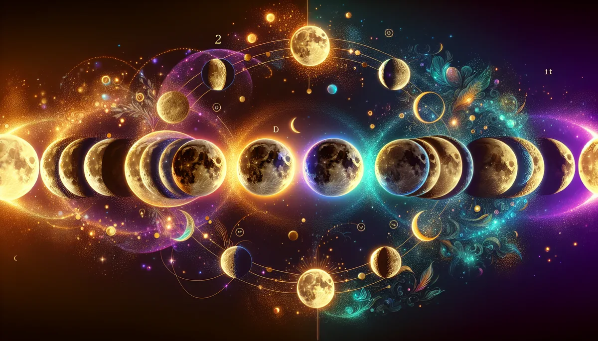

MOON TYPE
🌙
你是哪種月亮？
月亮从不试图一直是满月。它有新生、有成長、有圓满、有释放。你的情緒也是。
不是要你一直发光，是让你知道現在的月相，然後跟它和平共处。
🌙 20 题 · 约 5 分鐘 · 8 種月亮人格 · 馥灵之钥独家
第 1 题
0%
看看我的月相 🌙
📥 儲存图片
🧵 分享到 Threads
📋 複製結果
💬 分享到 LINE
🔄 重新测一次
✨ 更多觉察测验
🌬️
情緒味道
🏰
內在城堡
🛡️
人际界限
🦋
高敏感族群